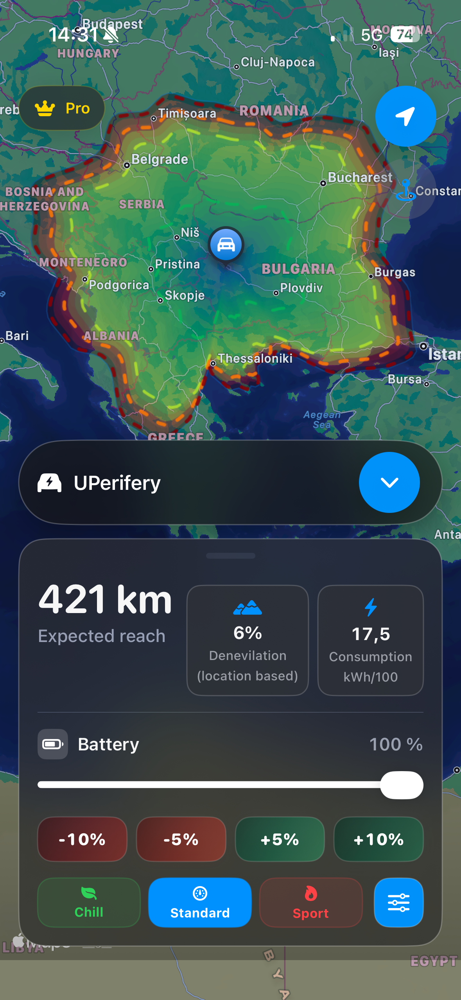
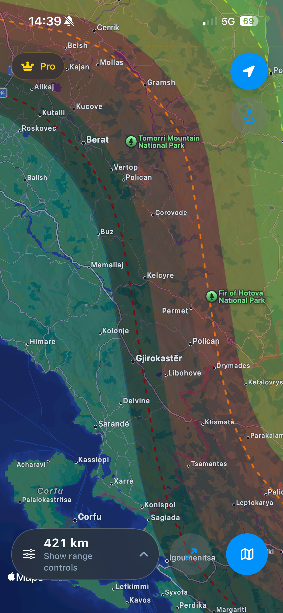
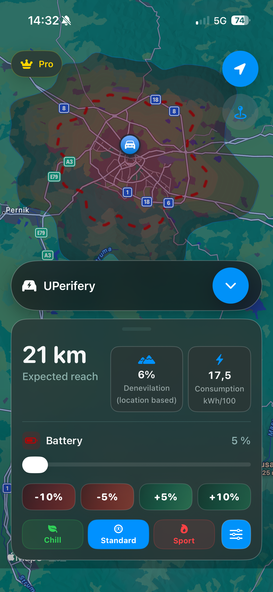
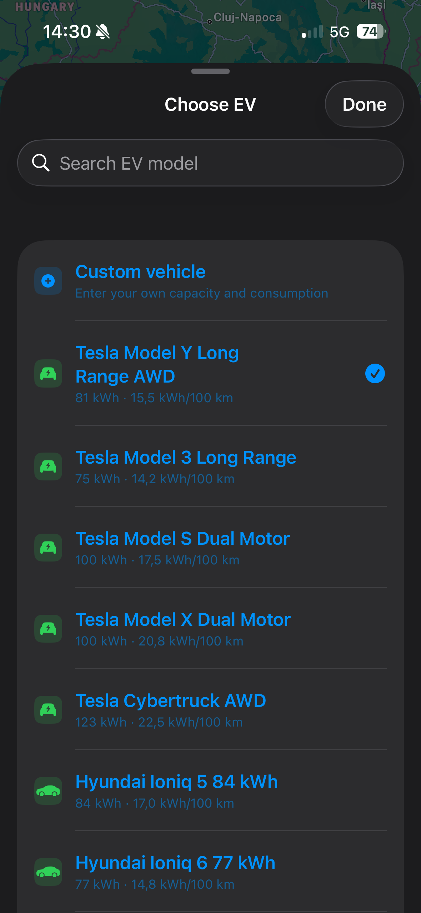
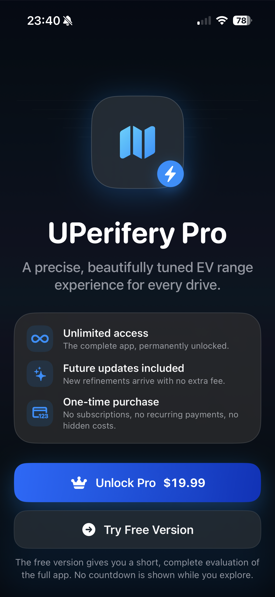
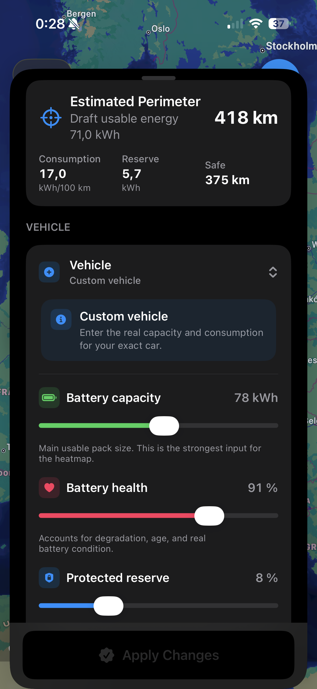
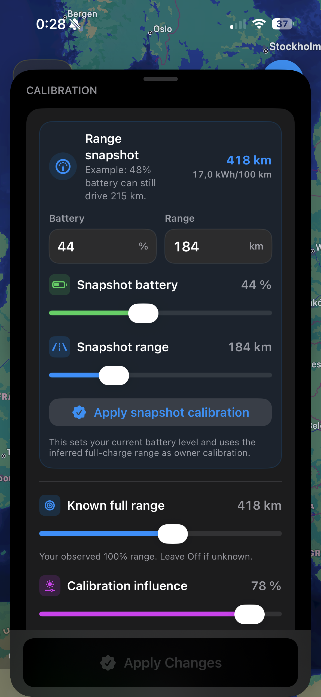
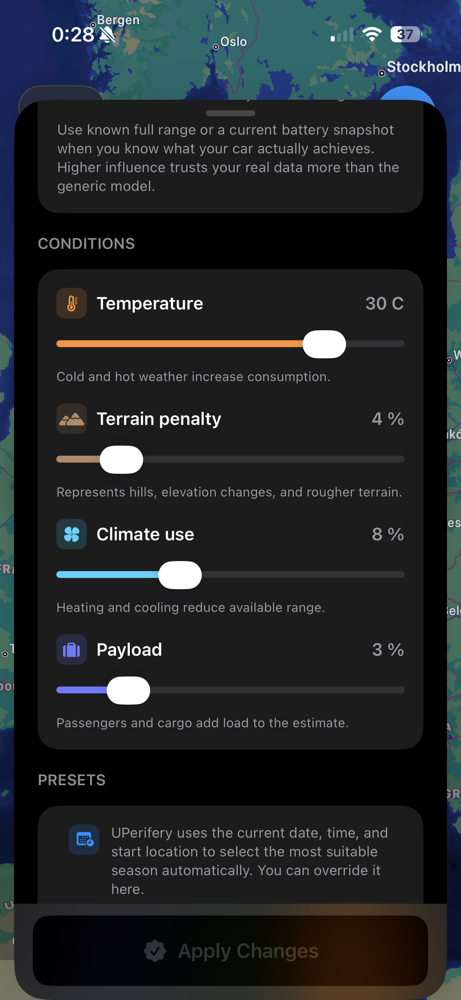
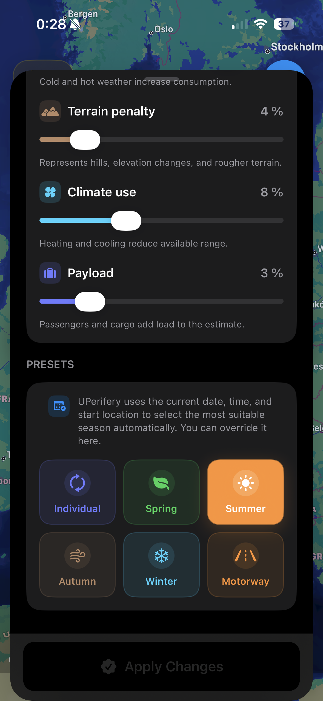

⌁
Adaptive perimeter
The reach area changes with battery level, reserve, vehicle efficiency, and calibration, then presents the result as an easy-to-read cloud.
UPerifery turns battery, terrain, temperature, driving mode, and calibration data into a living reachability heatmap.
Plan from your current location or any custom address, tune your vehicle profile, and visualize the reachable area with clear color thresholds from comfortable range to critical edge.

Not a generic circle on a map. UPerifery gives drivers a fast, visual estimate shaped by the details that make range feel different every day.
The reach area changes with battery level, reserve, vehicle efficiency, and calibration, then presents the result as an easy-to-read cloud.
Deep blue starts near comfortable charge, transitions through green and orange, then reaches red at the outer limit.
Use current position, search for places, or key in a specific location to redraw the range perimeter around a new start point.
Add full-range observations, current battery snapshots, reserve, health, temperature, terrain, climate use, and payload.
Switch between Chill, Standard, and Sport to see how acceleration style changes estimated consumption and range.
Unlock everything forever with a single lifetime purchase. No account, no login, no recurring subscription.
The heatmap is designed to be understood at a glance. Comfortable range stays calm and cool; the edge becomes warmer and more urgent as the remaining battery approaches zero.

Everything is tuned for fast scanning, elegant controls, and a native iOS feel.

Full range view
Low battery state
Location search
Lifetime ProAdvanced vehicle and calibration controls are staged before applying, so the app stays smooth while you tune the model.

Vehicle
Calibration
Conditions
PresetsUPerifery helps EV drivers understand range visually, tune assumptions honestly, and make better route decisions without pressure or clutter.